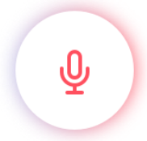

How to contribute to Igbo language on Common Voice
You can contribute to Igbo language in the following ways:
- .
- Please read the Common Voice Privacy policy to understand how your data is being used.
- Before recording, you can create a profile here. It is optional but provides benefit to metadata collection and for our Hall of Fame.

How to Record Your Voice
- To record your voice first click
- For the browser to capture your speech, hit the record button () and start speaking.
- Press the Stop button () to end recording.
- You need to record 5 recordings before you can submit it.
- Click Nyéfèé to submit your recordings.
Some tips on recording
- Please record in a low-noise area.
- If you can, record with earphones because it will capture your voice better.
- Please feel free to skip a sentence if you’re not to sure how to pronounce it.
How to Validate recordings
- Please read and understand the validation criteria before you start validating.
- To validate, first click
- Press the play button () to listen to the recording.
- After listening, press to Approve or to Reject the recording.
- If you are not sure, click Máfèé to skip the validation for that recording.